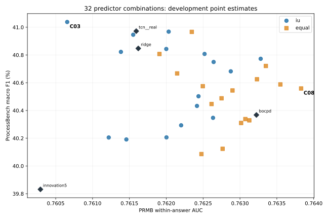

כל13,769 התשובות /145,597 צעדים /6,968,779 טוקנים.32 תצורות חדשות ו-16 ייחוסים. כל האימון הקודם נוצל מחדש; לא אומנו מנבאים חדשים.
הושלמו כל 16 הצירופים של שלושה, ארבעה וחמישה מנבאים, כל אחד עם IU-PCR ועם ממוצע: 32 תצורות על כל 13,769 התשובות, לצד 16 ייחוסים. השתמשנו במנבאים השמורים ובכיול המקונן, ללא אימון מנבאים חדשים. המשקול נלמד ללא תוויות; דירוג הצירופים משתמש בתוויות הפיתוח.
שיא PB בסריקה הוא 41.0378% עם IU-PCR על Ridge + TCN + noreset, ו-within של 0.760656. זהו שיפור של 0.0659 נקודת אחוז בלבד מול TCN לבדו, שמגיע ל-40.9718% ול-0.761592. רווח הסמך החקרני של 95% להפרש PB הוא [-0.3226, 0.4354] נקודות אחוז. אין הצדקה להחליף את הייחוס על סמך השיא הזה.
המוביל ב-within הוא ממוצע Ridge + BOCPD + noreset: 0.763829, לצד 40.5585% PB ו-0.642625 PRMScore. מול BOCPD לבדו שני אומדני הנקודה גבוהים יותר, אך שני רווחי הסמך החקרניים כוללים אפס. חלופה ששומרת על PB גבוה היא ממוצע Ridge + TCN + BOCPD: 40.9665% ו-0.762346. בתוך משפחת IU, Ridge + BOCPD + noreset נותן פשרה של 40.7726% ו-0.763281. אין מועמד יחיד שמוביל בשני המדדים.
תרומת המשקול עצמו לא הוכחה: כל 16 רווחי הסמך הראשיים להפרש PB בין IU לממוצע של אותם מנבאים כוללים אפס. ב-within, IU נמוך מהממוצע ב-15 מתוך 16 אומדני הנקודה, ובארבע השוואות רווח הסמך המתוקן של 99.84375% שלילי כולו. בשלישייה המובילה ב-PB, הירידה מול הממוצע המקביל היא 0.002243, עם רווח [-0.004226, -0.000202]. שאר ההשוואות אינן מוכיחות שקילות.
אבחון המשקלים מסביר מה המנגנון עושה, בלי להוכיח מדוע הוא משנה את האיכות: בשלישיית שיא ה-PB, המשקלים החציוניים על השאריות המתוקננות הם בערך 0.355 ל-Ridge, 0.380 ל-TCN ו-−0.139 ל-noreset; יש משקל שלילי ב-99.88% מהתשובות. לכן noreset משמש בעיקר כחיסור רקע. זהו ממצא תיאורי, לא הוכחה שהוא מסיר דווקא רעש סמנטי. המשקלים קבועים בתוך כל תשובה, ומשתנים בין תשובות.
התוצאות אינן תומכות בכלל שלפיו יותר מנבאים נותנים יותר איכות: הצירוף של כל החמישה אינו מוביל באף אחד משני המדדים. נשמור את חזית הפשרות ואת הייחוסים, אך לא נקבע את שיא 41.0378% כשיטה משופרת מוכחת. כל הנתונים כאן שימשו לפיתוח בעבר; רווחי ההשוואות המשניות אינם מתקנים את הבחירה מתוך הסריקה. תור FM/DiFlo נשאר מושהה.
כל 48 חבילות המדדים אומתו באופן עצמאי; כל 32 ציוני המיזוג שוחזרו על כל התשובות, בפער מרבי של 1.07e-14. ציוני המנבאים הבודדים שוחזרו בכל 15 עבודות הניקוד והכיול. שלוש בדיקות חדשות עברו, כולל התאמה למימוש IU הקנוני. הניקוד נמשך 11.53 דקות וההערכה כ-91 שניות.
| תחום | מוביל PB | מוביל within |
|---|---|---|
| כל התצורות | iu__ridge+tcn+noreset | equal__ridge+bocpd+noreset |
| 3 מנבאים | iu__ridge+tcn+noreset | equal__ridge+bocpd+noreset |
| 4 מנבאים | iu__ridge+tcn+bocpd+noreset | equal__ridge+tcn+bocpd+noreset |
| 5 מנבאים | iu__ridge+tcn+bocpd+noreset+mean16 | equal__ridge+tcn+bocpd+noreset+mean16 |
| iu | iu__ridge+tcn+noreset | iu__ridge+bocpd+noreset |
| equal | equal__ridge+tcn+bocpd | equal__ridge+bocpd+noreset |
הבחירה נעשית באמצעות תוויות הפיתוח. המובילים הם אומדני נקודה בסריקה הזאת; אין כאן אישור על שאלות חדשות. בשוויון משתמשים במדד האחר, אחר כך PRMScore, פחות מנבאים ולבסוף סדר שמות קבוע.

| מזהה | שיטה וצירוף | מספר מנבאים | PB F1 % | within-AUC | PRMScore |
|---|---|---|---|---|---|
| C03 | iu__ridge+tcn+noreset | 3 | 41.0378 | 0.760656 | 0.640647 |
| C21 | iu__ridge+tcn+bocpd+noreset | 4 | 40.9681 | 0.762033 | 0.642636 |
| C02 | equal__ridge+tcn+bocpd | 3 | 40.9665 | 0.762346 | 0.641925 |
| C01 | iu__ridge+tcn+bocpd | 3 | 40.9459 | 0.761552 | 0.641041 |
| C25 | iu__ridge+tcn+noreset+mean16 | 4 | 40.8433 | 0.762000 | 0.642066 |
| C05 | iu__ridge+tcn+mean16 | 3 | 40.8224 | 0.761384 | 0.640357 |
| C23 | iu__ridge+tcn+bocpd+mean16 | 4 | 40.8074 | 0.762519 | 0.641711 |
| C06 | equal__ridge+tcn+mean16 | 3 | 40.8071 | 0.761907 | 0.641729 |
| C07 | iu__ridge+bocpd+noreset | 3 | 40.7726 | 0.763281 | 0.642567 |
| C31 | iu__ridge+tcn+bocpd+noreset+mean16 | 5 | 40.7495 | 0.762642 | 0.642234 |
| C22 | equal__ridge+tcn+bocpd+noreset | 4 | 40.7209 | 0.763351 | 0.642141 |
| C13 | iu__tcn+bocpd+noreset | 3 | 40.6821 | 0.762875 | 0.642449 |
| C16 | equal__tcn+bocpd+mean16 | 3 | 40.6670 | 0.762148 | 0.641841 |
| C32 | equal__ridge+tcn+bocpd+noreset+mean16 | 5 | 40.6251 | 0.763231 | 0.642174 |
| C14 | equal__tcn+bocpd+noreset | 3 | 40.5879 | 0.763548 | 0.642341 |
| C24 | equal__ridge+tcn+bocpd+mean16 | 4 | 40.5751 | 0.762495 | 0.641979 |
| C08 | equal__ridge+bocpd+noreset | 3 | 40.5585 | 0.763829 | 0.642625 |
| C04 | equal__ridge+tcn+noreset | 3 | 40.5442 | 0.762898 | 0.641787 |
| C29 | iu__tcn+bocpd+noreset+mean16 | 4 | 40.5024 | 0.762437 | 0.641801 |
| C10 | equal__ridge+bocpd+mean16 | 3 | 40.4878 | 0.762750 | 0.641359 |
| C26 | equal__ridge+tcn+noreset+mean16 | 4 | 40.4465 | 0.762614 | 0.642143 |
| C11 | iu__ridge+noreset+mean16 | 3 | 40.4328 | 0.762417 | 0.641450 |
| C27 | iu__ridge+bocpd+noreset+mean16 | 4 | 40.3469 | 0.762634 | 0.641876 |
| C30 | equal__tcn+bocpd+noreset+mean16 | 4 | 40.3381 | 0.763073 | 0.641945 |
| C20 | equal__bocpd+noreset+mean16 | 3 | 40.3289 | 0.763127 | 0.641548 |
| C28 | equal__ridge+bocpd+noreset+mean16 | 4 | 40.3099 | 0.763015 | 0.642007 |
| C17 | iu__tcn+noreset+mean16 | 3 | 40.2930 | 0.762202 | 0.641232 |
| C09 | iu__ridge+bocpd+mean16 | 3 | 40.2060 | 0.762003 | 0.641248 |
| C15 | iu__tcn+bocpd+mean16 | 3 | 40.2052 | 0.761219 | 0.640859 |
| C19 | iu__bocpd+noreset+mean16 | 3 | 40.1912 | 0.761458 | 0.641016 |
| C12 | equal__ridge+noreset+mean16 | 3 | 40.1237 | 0.762764 | 0.642296 |
| C18 | equal__tcn+noreset+mean16 | 3 | 40.0858 | 0.762477 | 0.642012 |
| שיטה | PB F1 % | within-AUC | PRMScore |
|---|---|---|---|
| original4 | 37.4749 | 0.753436 | 0.634412 |
| innovation5 | 39.8314 | 0.760293 | 0.638830 |
| ridge | 40.8472 | 0.761620 | 0.641765 |
| tcn__real | 40.9718 | 0.761592 | 0.641153 |
| bocpd | 40.3676 | 0.763223 | 0.642268 |
| noreset | 39.8608 | 0.762839 | 0.642239 |
| mean16 | 39.8648 | 0.759979 | 0.639336 |
16 השוואות ראשיות כפול שני מדדים;10,000 דגימות bootstrap מזווגות לפי קבוצות מקור. רווחי סמך99.84375% בתיקון Bonferroni. רווח הכולל אפס אינו הוכחת שקילות.
| צירוף | הפרש PB בנקודות אחוז | CI PB | הפרש within | CI within |
|---|---|---|---|---|
| ridge+tcn+bocpd | -0.0206 | [-0.6865, 0.626] | -0.000795 | [-0.00208, 0.000432] |
| ridge+tcn+noreset | +0.4936 | [-0.5572, 1.4538] | -0.002243 | [-0.004226, -0.000202] |
| ridge+tcn+mean16 | +0.0152 | [-0.9226, 0.9731] | -0.000523 | [-0.0026, 0.001633] |
| ridge+bocpd+noreset | +0.2141 | [-0.4112, 0.8369] | -0.000549 | [-0.001595, 0.000513] |
| ridge+bocpd+mean16 | -0.2818 | [-0.8969, 0.3531] | -0.000747 | [-0.001839, 0.000372] |
| ridge+noreset+mean16 | +0.3091 | [-0.1924, 0.8124] | -0.000348 | [-0.001649, 0.000992] |
| tcn+bocpd+noreset | +0.0942 | [-0.4263, 0.5889] | -0.000673 | [-0.001527, 0.000179] |
| tcn+bocpd+mean16 | -0.4619 | [-1.2061, 0.3084] | -0.000928 | [-0.002268, 0.000421] |
| tcn+noreset+mean16 | +0.2072 | [-0.3709, 0.8213] | -0.000276 | [-0.001518, 0.001003] |
| bocpd+noreset+mean16 | -0.1377 | [-0.9315, 0.7641] | -0.001668 | [-0.002977, -0.0002] |
| ridge+tcn+bocpd+noreset | +0.2472 | [-0.3997, 0.9189] | -0.001318 | [-0.002504, -6.8e-05] |
| ridge+tcn+bocpd+mean16 | +0.2323 | [-0.1355, 0.6377] | +0.000024 | [-0.000633, 0.000721] |
| ridge+tcn+noreset+mean16 | +0.3967 | [-0.1733, 0.9766] | -0.000614 | [-0.001454, 0.000265] |
| ridge+bocpd+noreset+mean16 | +0.0370 | [-0.5117, 0.6046] | -0.000381 | [-0.001377, 0.000649] |
| tcn+bocpd+noreset+mean16 | +0.1643 | [-0.3166, 0.6742] | -0.000636 | [-0.001757, 0.000491] |
| ridge+tcn+bocpd+noreset+mean16 | +0.1244 | [-0.2606, 0.5236] | -0.000588 | [-0.001134, -4.7e-05] |
ב-METRICS.json מופיעות גם השוואות כל32 התצורות מול Ridge,TCN,BOCPD עם רווחי סמך95% חקרניים. הן אינן מתוקנות לבחירת המוביל ולכן אינן אישור ליתרונו לאחר הסריקה. כל התוצאות משתמשות באותה אוכלוסיית פיתוח היסטורית וב-seed0.
בכל טוקן מחשבים לכל מנבא שארית חתומה על אותם חמשת הפיצ׳רים. מתקננים כל עמודת שארית בתוך התשובה. IU מתאים covariance ממורכז ומפיק משקלים בשני הרכיבים הספקטרליים הראשיים; המיצוע מקבל בדיוק אותן עמודות מתוקננות. מכוונים את סימן הציון לכיוון ציון השארית הממוצע לפי covariance ללא תוויות. המשקלים קבועים בתוך תשובה ויכולים להשתנות בין תשובות; אין routing לפי טוקן בניסוי הזה.
ממזגים ברמת הטוקן, מסכמים Top10 לכל צעד, ומוסיפים תיקון חתום.25 לבסיס innovation5 פעם אחת. ה-gate נשאר tail15 באחוזון.33. אין ממוצע חוזר של כמה עותקים של הבסיס ואין שינוי סדר Top10 בין IU לבקרת המיצוע.
Ridge ו-TCN משתמשים במודלים שנלמדו מקבוצות מקור אחרות ללא תוויות נכונות. BOCPD,noreset,mean16 והמשקול משתמשים בתשובה עצמה. הנרמול התשובתי והמיקום היחסי מגדירים מערכת offline. הכיול המקונן משתמש בכל10 זוגות ה-folds, עם שני המנבאים הנלמדים מותאמים ללא שתי קבוצות ה-folds המוחזקות בחוץ.
המשקלים להלן פועלים על שאריות מתוקננות, לא ביחידות הפיצ׳רים המקוריות. ערכים שליליים מותרים ב-IU הקנוני. בשלושה מנבאים שארית ההתאמה הזוגית מתאפסת לפי בניית המערכת ואינה ראיה לתקפות ההנחות.
| צירוף | משקלים חציוניים לפי סדר השמות | שיעור תשובות עם משקל שלילי | שארית זוגית חציונית | שיעור g2 בתקרה |
|---|---|---|---|---|
| ridge+tcn+bocpd | [0.3004, 0.3611, -0.0496] | 0.902 | 0.000000 | 1.000 |
| ridge+tcn+noreset | [0.3549, 0.38, -0.1394] | 0.999 | 0.000000 | 1.000 |
| ridge+tcn+mean16 | [0.3484, 0.381, -0.1305] | 1.000 | 0.000000 | 1.000 |
| ridge+bocpd+noreset | [0.293, 0.2333, 0.0886] | 0.221 | 0.000000 | 1.000 |
| ridge+bocpd+mean16 | [0.0723, 0.2302, 0.311] | 0.138 | 0.000000 | 1.000 |
| ridge+noreset+mean16 | [0.0475, 0.296, 0.2639] | 0.357 | 0.000000 | 1.000 |
| tcn+bocpd+noreset | [0.2284, 0.2189, 0.1727] | 0.053 | 0.000000 | 1.000 |
| tcn+bocpd+mean16 | [0.0108, 0.2517, 0.3462] | 0.416 | 0.000000 | 1.000 |
| tcn+noreset+mean16 | [0.0166, 0.3027, 0.2827] | 0.434 | 0.000000 | 1.000 |
| bocpd+noreset+mean16 | [0.3221, -0.0361, 0.3195] | 0.661 | 0.000000 | 1.000 |
| ridge+tcn+bocpd+noreset | [0.2262, 0.2399, 0.1371, 0.0099] | 0.434 | 0.037642 | 1.000 |
| ridge+tcn+bocpd+mean16 | [0.1805, 0.1837, 0.1421, 0.1142] | 0.000 | 0.050529 | 1.000 |
| ridge+tcn+noreset+mean16 | [0.1964, 0.2009, 0.1054, 0.1163] | 0.033 | 0.061490 | 1.000 |
| ridge+bocpd+noreset+mean16 | [0.1293, 0.1609, 0.1695, 0.1845] | 0.253 | 0.022018 | 1.000 |
| tcn+bocpd+noreset+mean16 | [0.0586, 0.1609, 0.2026, 0.2021] | 0.272 | 0.021359 | 1.000 |
| ridge+tcn+bocpd+noreset+mean16 | [0.1411, 0.1416, 0.127, 0.1057, 0.1112] | 0.024 | 0.051449 | 1.000 |
כל48 השיטות עברו חישוב עצמאי של PB ו-within. כל16 כותרות הייחוס שוחזרו. ה-readout של כל32 התצורות שוחזר באופן עצמאי מסכום התרומות ומיון הטוקנים: פער מרבי 1.07e-14. פער מרבי במשקלים מול IU הקנוני בבדיקת50 תשובות ללא תוויות: 0. ציוני חמשת המנבאים הבודדים שוחזרו בכל15 עבודות הניקוד, כולל הכיול.
זמן קיר לניקוד: 11.53 דקות, עם עד3 תהליכים חד-תהליכוניים במקביל; זמן הערכה: 90.77 שניות. שלוש בדיקות חדשות עברו, כולל45 מטריצות covariance לבדיקת התאמה למימוש הקנוני. אין החלפה שקטה של כשל במיצוע.
מערכי השאריות, המשקלים וקובצי SQLite נשמרים מקומית עם חתימות. דיווח לפי תא, לכל48 השיטות, נמצא ב-METRICS.json. תור ה-flows נשאר מושהה.
פרוטוקול · מדדים ורווחי סמך · אימות · טבלת CSV
ניתוח תיאורי לאחר הבחירה: מתוך 4442 תשובות PB עם שגיאה, 2853 הוחמצו בכל32 הצירופים. ב-821 ה-gate סגר את התשובה; ב-2032 הוא היה פתוח אך אף צירוף לא בחר את הצעד המתויג. אלה תשובות מודל, לא שאלות מקור עצמאיות. האיחוד בין השיטות הוא אורקל לבחירת פסגה קיימת בלבד.
ספירות ודוגמאות עם טקסט הצעדים · כל התחזיות והמזהים · אבחון מלא.